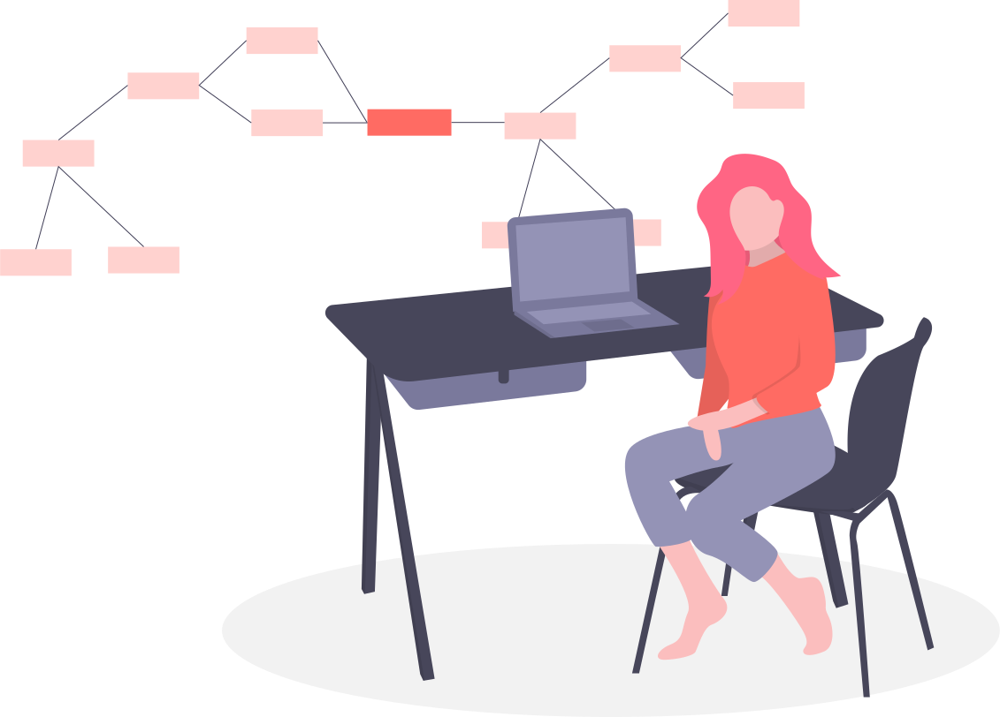
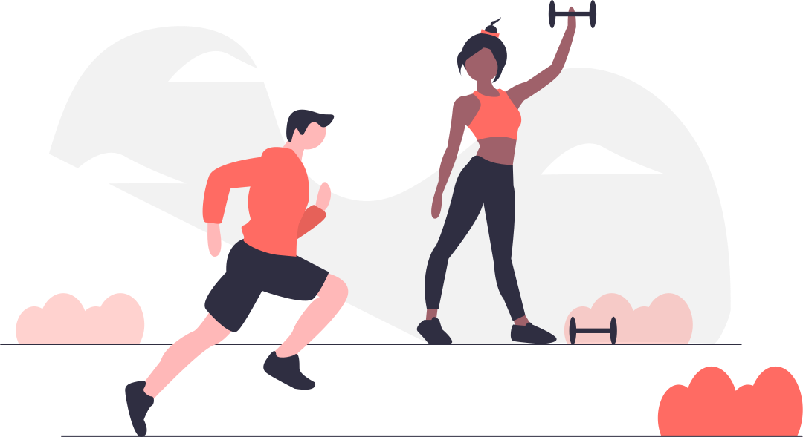
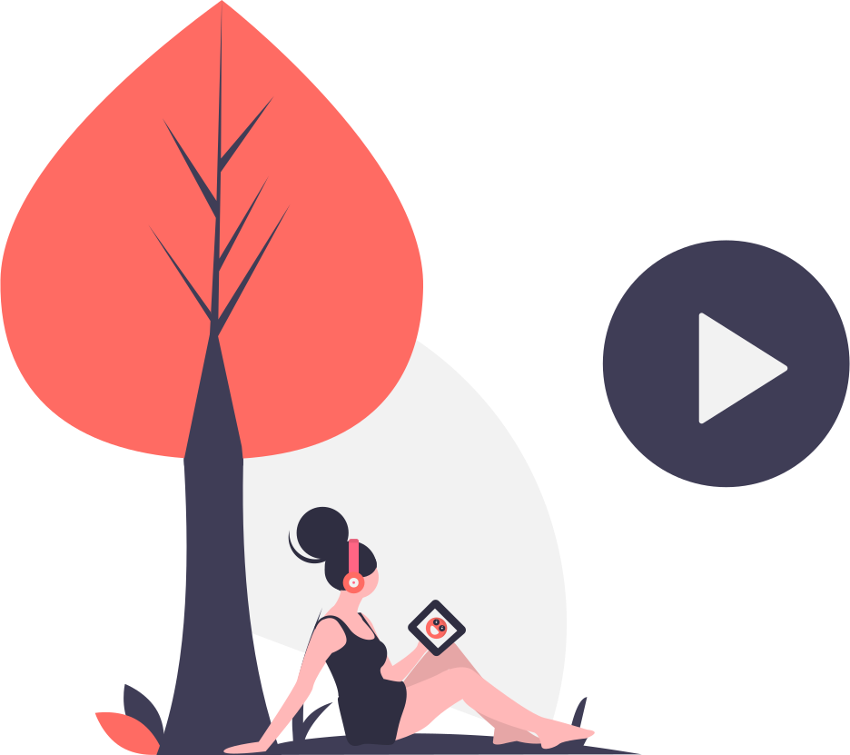
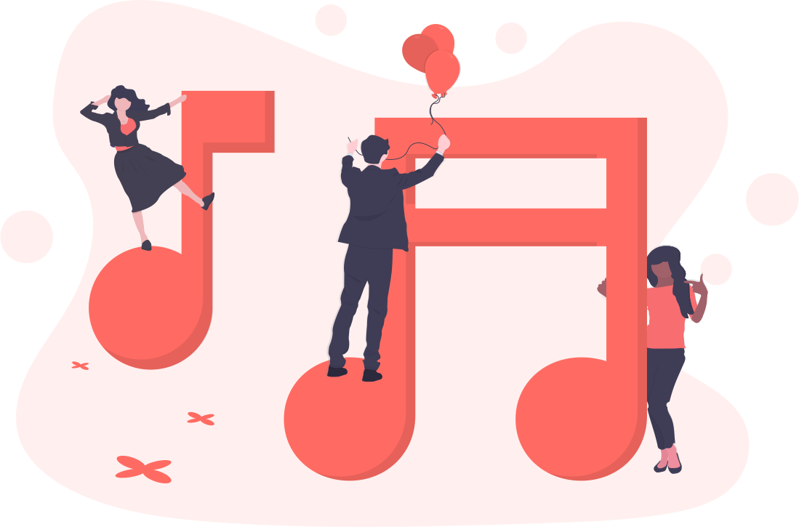
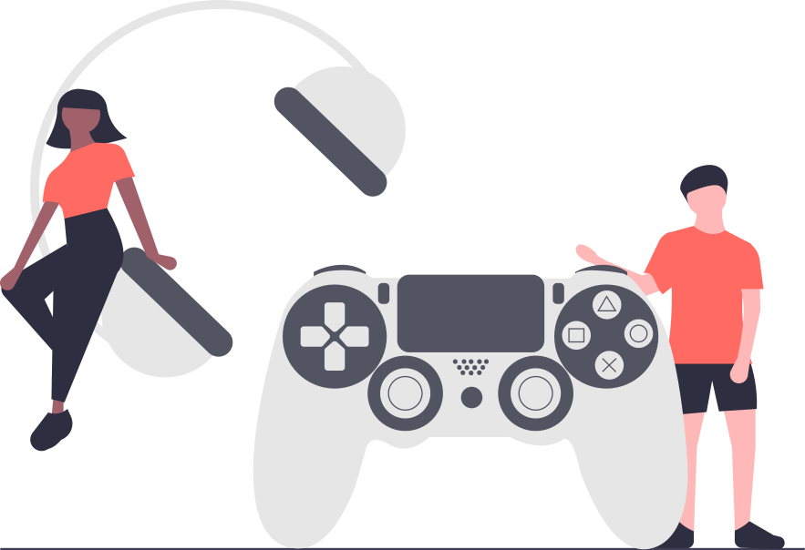

Actividades
Tecnologia
Trabaja en casa
Sabemos que el momento por el que estamos pasando es muy dificil para nosotros, porque se suspenden todo tipo de actividades, ya sea trabajar, estudiar, aprender de manera presencial. Asi que te mostraremos algunos programas o aplicaciones con las cuales puedes estudiar desde casa, trabajar de via remota, conversar con tus compañeros, entre otras actividades a distancia.

Plataformas para trabajar o estudiar
Disfruta de todos estos recursos
Noticias
Leer es una buena opcion
Si eres de las personas que no ven muchas noticias o no se encuentran informadas del COVID-19, que nadie te lo cuente, visita sitios informativos de salud confiables, puedes leer, conocer y aprender mas al respecto de la situacion.
Noticias mas importantes al momento
Ejercicios
Ejercitartate en casa
Eres de las personas adictas al gimnasio o quizas eres de esas que recien se animan a ejercitarse, el hacerlo en casa es mucho mas facil de lo que se pensaba, todo gracias a la tecnologia con la que contamos hoy en dia.

Descubre muchas maneras de activarte
Checa estos canales de Youtube
Opcion 1
Opcion 2
Opcion 3
Realiza ejercicio desde tu hogar
Entretenimiento
Diviertete en casa
Eres de las personas adictas al gimnasio o quizas eres de esas que recien se animan a ejercitarse, el hacerlo en casa es mucho mas facil de lo que se pensaba, todo gracias a la tecnologia con la que contamos hoy en dia.

Descubre plataformas de streaming
Netflix
Prime M
HBO GO
Disfruta del mejor entretenimiento
Musica
Crea un concierto en casa
La musica representa una parte de nosotros, podemos estar pasando por un mal dia pero al acostarnos y ponernos nuestros audifonos con nuestra playlist favorita, realmente rejuvenece el alma y te reencuentras con uno mismo.

Descubre musica de todas partes
Youtube
Amazon
Spotify
Disfruta la mejor musica en casa
Videojuegos
Los dias durante esta cuarentena se vuelven un poco repetitivos, ya que se acaban las ideas sobre que actividades realizar durante la contingencia, quizas el jugar videojuegos sea una buena opcion, no necesitas una consola para realizar estas actividades, desde tu computadora o celular puedes jugar, descubre excelentes emuladores que puedes descargar online.
Descarga emuladores gratis aqui

Descubre mas acerca de videojuegos